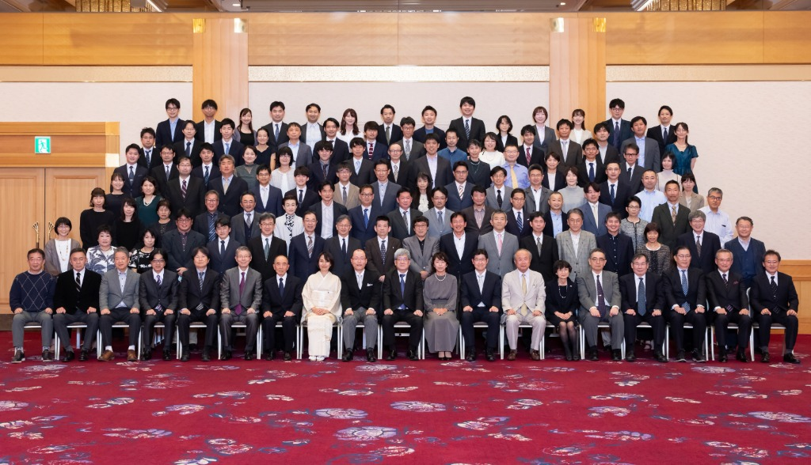
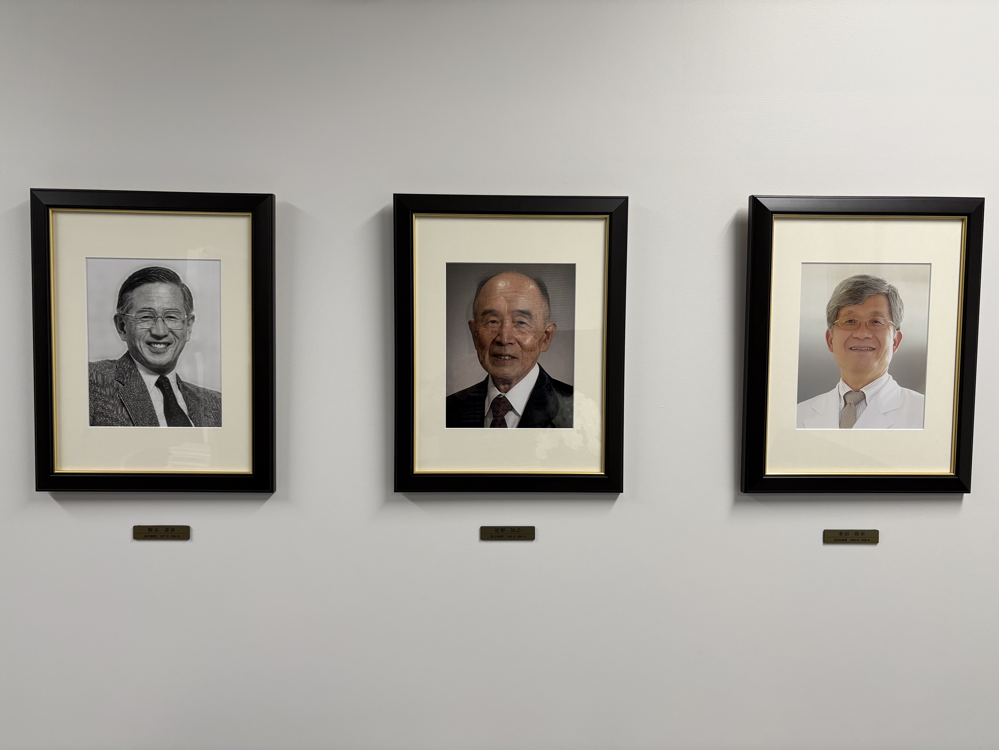

～光輝く特殊性を持ち、
多様性を大事にする教室

History
沿革と歴代教授

浜松医科大学耳鼻咽喉科・頭頸部外科学教室は、1977年に野末道彦氏を初代教授として開講しました。その後、1995年に星野知之氏が第2代教授に、2003年には本学1期生の峯田周幸氏が第3代教授に昇任しました。
そして、2021年4月には本学16期生の三澤清が第4代教授に就任し、現在に至ります。歴代教授はいずれも教室内部から就任しており、研究と診療の両面において教育の継続性と伝統が重んじられ、脈々と受け継がれています。
Mission & Philosophy
教室の特徴と理念
当教室は、臨床・研究・教育のすべてに力を注いでいますが、特に臨床医の育成に重点を置いています。
初代教授である野末氏から受け継いだ「患者さんの気持ちに寄り添う診療」を常に心掛け、第2代教授の星野氏からは「確実な手術手技の継承」を大切に守り続けています。また、大学医学部にとって重要な使命である研究面においては、前教授である峯田氏の「熱いリサーチマインドを持つ医師であれ」という理念を受け継ぎ、臨床への還元を目指したトランスレーショナルリサーチを推進しています。教育に関しては、県内の多くの関連病院と連携し、若い耳鼻咽喉科・頭頸部外科医の育成に努めています。
私は教授就任にあたり、「多様性を大切にする教室」を基本理念として掲げました。この方針のもと、医局員一同が臨床・研究に日々励んでいます。また、当教室は2026年に開講50周年を迎えます。
Regional Healthcare
静岡県の耳鼻咽喉科診療を支える教室
静岡県の医療ネットワーク
大学から派遣された医師および同門会員が一丸となり、静岡県全域の耳鼻咽喉科診療を盤石な体制でカバーしています。
静岡県内には、当教室から常勤医を派遣している関連病院が17施設あります。大学には約20名、関連病院を含めると約70名の医局員が活躍しています。同門会員は約80名おり、医局員と合わせて150名体制で静岡県の耳鼻咽喉科診療を支えています。
また、浜松医科大学附属病院耳鼻咽喉科・頭頸部外科の専攻医プログラムは定員16名で、全国でも最大規模のプログラムです。これは、多くの指導医が在籍していることに加え、関連病院の多くで4名以上の常勤医が各分野の手術を担当しているためです。
Diverse Workstyles & Education
多様な働き方への配慮
耳鼻咽喉科・頭頸部外科が扱う疾患は、聴覚・味覚・嗅覚に関する障害から、頭頸部腫瘍、嚥下障害、睡眠時無呼吸症候群など多岐にわたります。この多様性が、耳鼻咽喉科・頭頸部外科の奥深さであり、魅力の一つです。専攻医の間は、どのような疾患にも対応できるように幅広く経験することを第一目標とします。専門医になった頃から、自分の興味のある分野を開拓し、その専門性の習得のための研修について相談して決めていきます。
また、女性医師が安心してキャリアを継続できるよう、個々のライフスタイルに合わせた多様な働き方を尊重し、無理なく臨床や研究を続けられるよう配慮しています。さらに、男性医師の育児参加や介護のための休業にも柔軟に対応しています。
学生・研修医の皆様へ
このホームページをご覧になり、当教室に興味をお持ちいただいた医学生、研修医、専攻医の皆様は、ぜひお気軽にご連絡ください。当教室のキャリアアップ・プログラムのご紹介をはじめ、医局説明や病院見学も随時行っています。まずは、教室の雰囲気を感じていただければ幸いです。
皆様とともに、新しい時代の耳鼻咽喉科・頭頸部外科学教室を築いていけることを楽しみにしています。